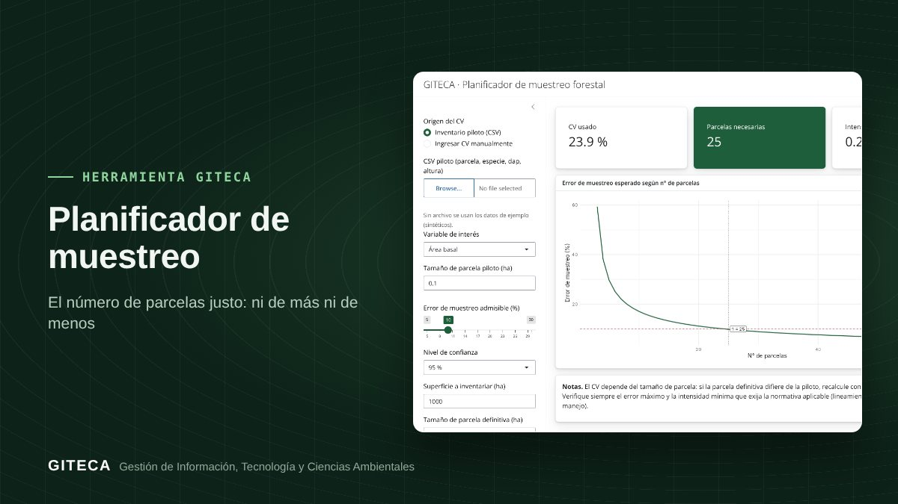

¿Cuántas parcelas necesita tu inventario? Calcúlalo antes de ir al campo
A partir de un inventario piloto o de un coeficiente de variación, la app calcula el número de parcelas, la intensidad y el error de muestreo esperado.
Abrir la app ↗Gratis y en el navegador.

¿Cuántas parcelas necesitas para no pasarte del error de muestreo admisible?
Instalar parcelas de más encarece el inventario; instalar de menos obliga a volver al campo. El Planificador de muestreo responde esa pregunta con estadística, antes de movilizar a la brigada.
Antes y ahora
El proceso de siempre
- Calcular el coeficiente de variación del piloto en una hoja de cálculo.
- Aplicar la fórmula del tamaño de muestra y corregir por población finita.
- Probar a mano distintos errores admisibles y tamaños de parcela.
Con la herramienta
- Subes el CSV del piloto o ingresas un CV conocido.
- Eliges la variable, el tamaño de parcela, el error admisible y la confianza.
- La app muestra el número de parcelas, la intensidad y la curva de error según el número de parcelas.
Tiempos de referencia estimados por el equipo GITECA; varían según el tamaño del área y la experiencia del usuario.
En la práctica: Con el piloto de ejemplo (CV de 23,9 %), la app indica 25 parcelas y una intensidad de muestreo de 0,25 %.
Qué hace
- CV desde un inventario piloto o ingresado a mano.
- Número de parcelas e intensidad para el error y la confianza elegidos.
- Curva de error de muestreo esperado según el número de parcelas.
Para quién es
Empieza en 3 pasos
- Abre la app (la primera carga tarda 1 a 2 minutos).
- Carga el piloto o escribe el CV.
- Ajusta el error y la confianza, y anota el número de parcelas.
Planificador de muestreoGratis y en el navegador.
Abrir la app ↗
Ten en cuenta: El CV depende del tamaño de parcela. Contrasta el resultado con la intensidad mínima que exigen los lineamientos del SERFOR para tu plan. ¿Necesitas adaptarla a tu proyecto o capacitar a tu equipo? Escríbenos.